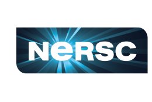
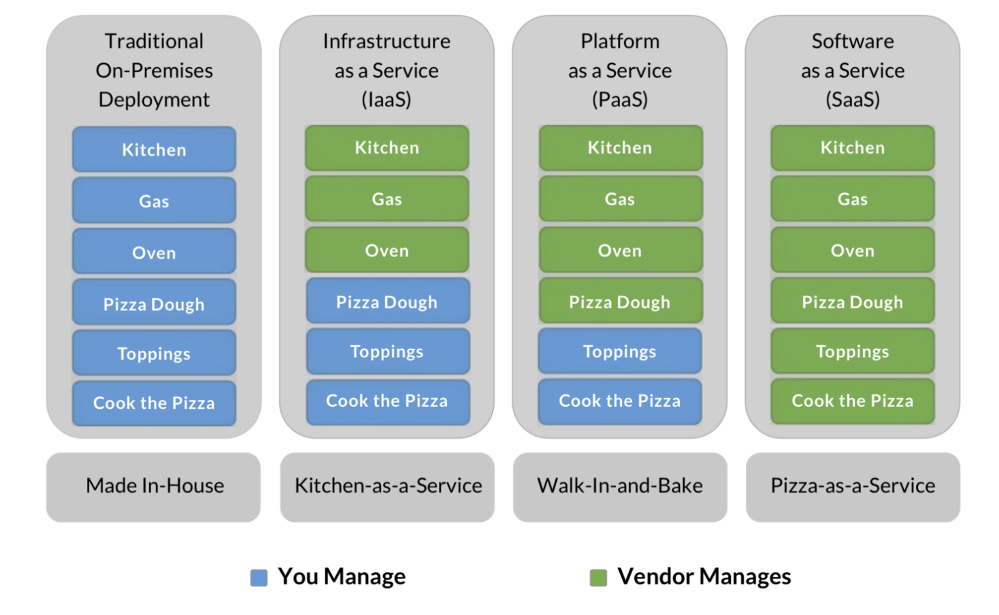

2 Remote and Cloud Computing
2.1 Learning Objectives
- Understand the basic architecture of computer networks
- Learn how to connect to a remote computer via a shell
- Become familiarized with Bash Shell programming to navigate your computer’s file system, manipulate files and directories, and automate processes
- Learn different uses of the term cloud computing
- Understand the services of cloud providers
- Gain familiarity with containerized computing
2.2 Introduction
Scientific synthesis and our ability to effectively and efficiently work with big data depends on the use of computers and the internet. Working on a personal computer may be sufficient for many tasks, but as data get larger and analyses more computationally intensive, scientists often find themselves needing more computing resources than they have available locally. Remote computing, or the process of connecting to a computer(s) in another location via a network link is becoming more and more common in overcoming big data challenges.
In this lesson, we’ll learn about the architecture of computer networks and explore some of the different remote computing configurations that you may encounter, we’ll learn how to securely connect to a remote computer via a shell, and we’ll become familiarized with using Bash Shell to efficiently manipulate files and directories. We will begin working in the VS Code IDE (integrated development environment), which is a versatile code editor that supports many different languages.
2.3 Servers & Networking
Remote computing typically involves communication between two or more “host” computers. Host computers connect via networking equipment and can send messages to each other over communication protocols (aka an Internet Protocol, or IP). Host computers can take the role of client or server, where servers share their resources with the client. Importantly, these client and server roles are not inherent properties of a host (i.e. the same machine can play either role).
- Client: the host computer intiating a request
- Server: the host computer responding to a request
Fig 1. Examples of different remote computing configurations. (a) A client uses secure shell protocol (SSH) to login/connect to a server over the internet. (b) A client uses SSH to login/connect to a computing cluster (i.e. a set of computers (nodes) that work together so that they can be viewed as a single system) over the internet. In this example, servers A - I are each nodes on this single cluster. The connection is first made through a gateway node (i.e. a computer that routes traffic from one network to another). (c) A client uses SSH to login/connect to a computing cluser where each node is a virtual machine (VM). In this example, the cluster comprises three servers (A, B, and C). VM1 (i.e. node 1) runs on server A while VM4 runs on server B, etc. The connection is first made through a gateway node.
2.4 IP addressing
Hosts are assigned a unique numerical address used for all communication and routing called an Internet Protocol Address (IP Address). They look something like this: 128.111.220.7. Each IP Address can be used to communicate over various “ports”, which allow multiple applications to communicate with a host without mixing up traffic.
- well-known ports, range from 0 through 1023 and are reserved for the most commonly used services (see table below for examples of some well-known port numbers)
- registered ports, range from 1024 through 49151 and are not assigned or controlled, but can be registered (e.g. by a vendor for use with thier own server application) to prevent duplication
- dynamic ports, range from 49152 through 65535 and are not assigned, controlled, or registered but may instead be used as temporary or private ports
| well-known port | assignment |
|---|---|
| 20, 21 | File Transfer Protocol (FTP), for transfering files between a client & server |
| 22 | secure shell (SSH), to create secure network connections |
| 53 | Domain Name System (DNS) service, to match domain names to IP addresses |
| 80 | Hypertext Transfer Protocol (HTTP), used in the World Wide Web |
| 443 | HTTP Secure (HTTPS), an encrypted version of HTTP |
Because IP addresses can be difficult to remember, they are also assigned hostnames, which are handled through the global Domain Name System (DNS). Clients first look up a hostname in the DNS to find the IP address, then open a connection to the IP address.
A couple important ones:
- Throughout this course, we’ll be working on a server with the hostname, included-crab and IP address, 128.111.85.28 (in just a little bit, we’ll learn how to connect to included-crab using SSH)
- localhost is a hostname that refers to your local computer and is assigned the IP address 127.0.0.1 – the concept of localhost is important for tasks such as website testing, and is also important to understand when provisioning local execution resources (e.g. we’ll practice this during the section 6 exercise when working with
Parsl.)
2.5 Bash Shell Programming
What is a shell? From Wikipedia:
“a computer program which exposes an operating system’s services to a human user or other programs. In general, operating system shells use either a command-line interface (CLI) or graphical user interface (GUI), depending on a computer’s role and particular operation.”

What is Bash? Bash, or Bourne-again Shell, is a command line tool (language) commonly used to manipulate files and directories. Accessing and using bash is slightly different depending on what type of machine you work on:
Mac: bash via the Terminal, which comes ready-to-use with all Macs and Linux machines
Windows: running bash depends on which version of Windows you have – newer versions may ship with bash or may require a separate install (e.g. Windows Subsystem for Linux (WSL) or Git Bash), however there are a number of different (non-bash) shell options as well (they all vary slightly; e.g. PowerShell, Command Prompt).
Mac users may have to switch from Z Shell, or zsh, to bash. Use the command exec bash to switch your default shell to bash (or exec zsh to switch back).
2.5.1 Some commonly used (and very helpful) shell commands:
Below are just a few shell commands that you’re likely to use. Some may be extended with options (more on that in the next section) or even piped together (i.e. where the output of one command gets sent to the next command, using the | operator). You can also find some nice bash cheat sheets online, like this one. Alternatively, the Bash Reference Manual has all the content you need, albeit a bit dense.
| bash command | what it does |
|---|---|
pwd |
print your current working directory |
cd |
change directory |
ls |
list contents of a directory |
tree |
display the contents of a directory in the form of a tree structure (not installed by default) |
echo |
print text that is passed in as an argument |
mv |
move or rename a file |
cp |
copy a file(s) or directory(ies) |
touch |
create a new empty file |
mkdir |
create a new directory |
rm/rmdir |
remove a file/ empty directory (be careful – there is no “trash” folder!) |
grep |
searches a given file(s) for lines containing a match to a given pattern list |
awk |
a text processing language that can be used in shell scripts or at a shell prompt for actions like pattern matching, printing specified fields, etc. |
sed |
stands for Stream Editor; a versatile command for editing files |
cut |
extract a specific portion of text in a file |
join |
join two files based on a key field present in both |
top, htop |
view running processes in a Linux system (press Q to quit) |
2.5.2 General command syntax
Bash commands are typically are written as: command [options] [arguments] where the command must be an executable on your PATH and where options (settings that change the shell and/or script behavior) take one of two forms: short form (e.g. command -option-abbrev) or long form (e.g. command --option-name or command -o option-name). An example:
# the `ls` command lists the files in a directory
ls file/path/to/directory
# adding on the `-a` or `--all` option lists all files (including hidden files) in a directory
ls -a file/path/to/directory # short form
ls --all file/path/to/directory # long form
ls -o all file/path/to/directory # long form2.5.3 Some useful keyboard shortcuts
It can sometimes feel messy working on the command line. These keyboard shortcuts can make it a little easier:
Ctrl+L: clear your terminal windowCtrl+U: delete the current lineCtrl+C: abort a command- up & down arrow keys: recall previously executed commands in chronological order
- TAB key: autocompletion
2.6 Connecting to a remote computer via a shell
In addition to navigating your computer/manipulating your files, you can also use a shell to gain accesss to and remotely control other computers. To do so, you’ll need the following:
- a remote computer (e.g. server) which is turned on
- client and server ssh clients installed/enabled
- the IP address or name of the remote computer
- the necessary permissions to access the remote computer
Secure Shell, or SSH, is a network communication protocol that is often used for securely connecting to and running shell commands on a remote host, tremendously simplifying remote computing.
2.7 Git via a shell
Git, a popular version control system and command line tool can be accessed via a shell. While there are lots of graphical user interfaces (GUIs) that faciliatate version control with Git, they often only implement a small subset of Git’s most-used functionality. By interacting with Git via the command line, you have access to all Git commands. While all-things Git is outside the scope of this workshop, we will use some basic Git commands in the shell to clone GitHub (remote) repositories to the server and save/store our changes to files. A few important Git commands:
| Git command | what it does |
|---|---|
git clone |
create a copy (clone) of repository in a new directory in a different location |
git add |
add a change in the working directory to the staging area |
git commit |
record a snapshot of a repository; the -m option adds a commit message |
git push |
send commits from a local repository to a remote repository |
git fetch |
downloads contents (e.g. files, commits, refs) from a remote repo to a local repo |
git pull |
fetches contents of a remote repo and merges changes into the local repo |
2.8 Let’s practice!
We’ll now use bash commands to do the following:
- connect to the server (included-crab) that we’ll be working on for the remainder of this course
- navigate through directories on the server and add/change/manipulate files
- clone a GitHub repository to the server
- automate some of the above processes by writing a bash script
2.8.1 Exercise 1: Connect to a server using the ssh command (or using VS Code’s command palette)
Let’s connect to a remote computer (included-crab) and practice using some of above commands.
- Launch a terminal in VS Code
There are two options to open a terminal window, if a terminal isn’t already an open pane at the bottom of VS Code
Click on
Terminal > New Terminalin top menu barClick on the
+ (dropdown menu) > bashin the bottom right corner
You don’t need to use the VS Code terminal to ssh into a remote computer, but it’s conveniently located in the same window as your code when working in the VS Code IDE.
- Connect to a remote server
- You can choose to SSH into the server (included-crab.nceas.ucsb.edu) through (a) the command line by using the
sshcommand, or (b) through VS Code’s command palette. If you prefer the latter, please refer back to the Log in to the server section. To do so via the command line, use thesshcommand followed byyourusername@included-crab.nceas.ucsb.edu. You’ll be prompted to type/paste your password to complete the login. It should look something like this:
yourusername:~$ ssh yourusername@included-crab.nceas.ucsb.edu
yourusername@included-crab.nceas.ucsb.edu's password:
yourusername@included-crab:~$ You won’t see anything appear as you type or paste your password – this is a security feature! Type or paste your password and press enter/return when done to finish connecting to the server.
To log out of the server, type exit – it should look something like this:
yourusername@included-crab.nceas.ucsb.edu:$ exit
logout
Connection to included-crab.nceas.ucsb.edu closed.
(base) .....2.8.2 Exercise 2: Practice using some common bash commands
Use the
pwdcommand to print your current location, or working directory. You should be in your home directory on the server (e.g./home/yourusername).Use the
lscommand to list the contents (any files or subdirectories) of your home directoryUse the
mkdircommand to create a new directory namedbash_practice:
mkdir bash_practice- Use the
cdcommand to move into your newbash_practicedirectory:
# move from /home/yourusername to home/yourusername/bash_practice
cd bash_practice- To move up a directory level, use two dots,
..:
# move from /home/yourusername/bash_practice back to /home/yourusername
$ cd ..To quickly navigate back to your home directory from wherever you may be on your computer, use a tilde, ~ :
# e.g. to move from from some subdirectory, /home/yourusername/Projects/project1/data, back to your home directory, home/yourusername
$ cd ~
# or use .. to back out three subdirectories
$ cd ../../..- Add some
.txtfiles (file1.txt,file2.txt,file3.txt) to yourbash_practicesubdirectory using thetouchcommand (Note: be sure tocdintobash_practiceif you’re not already there):
# add one file at a time
touch file1.txt
touch file2.txt
touch file3.txt
# or add all files simultanously like this:
touch file{1..3}.txt
# or like this:
touch file1.txt file2.txt file3.txt- You can also add other file types (e.g.
.py,.csv, etc.)
touch mypython.py mycsv.csv- Print out all the
.txtfiles inbash_practiceusing a wildcard,*:
ls *.txt- Count the number of
.txtfiles inbash_practiceby combining thelsandwc(word count) funtions using the pipe,|, operator:
# `wc` returns a word count (lines, words, chrs)
# the `-l` option only returns the number of lines
# use a pipe, `|`, to send the output from `ls *.txt` to `wc -l`
ls *.txt | wc -l- Delete
mypython.pyusing thermcommand:
rm mypython.py - Create a new directory inside
bash_practicecalleddataand movemycsv.csvinto it.
mkdir data
mv mycsv.csv ~/bash_practice/data
# add the --interactive option (-i for short) to prevent a file from being overwritten by accident (e.g. in case there's a file with the same name in the destination location)
mv -i mycsv.csv ~/bash_practice/data- Use
mvto renamemycsv.csvtomydata.csv
mv mycsv.csv mydata.csv- Add column headers
col1,col2,col3tomydata.csvusingecho+ the>operator
echo "col1, col2, col3" > mydata.csvYou can check to see that mydata.csv was updated using GNU nano, a text editor for the command line that comes preinstalled on Linux machines (you can edit your file in nano as well). To do so, use the nano command followed by the file you want to open/edit:
nano mydata.csvTo save and quit out of nano, use the control + X keyboard shortcut.
You can also create and open a file in nano in just one line of code. For example, running nano hello_world.sh is the same as creating the file first using touch hello_world.sh, then opening it with nano using nano hello_world.sh.
- Append a row of data to
mydata.csvusingecho+ the>>operator
# using `>` will overwrite the contents of an existing file; `>>` appends new information to an existing file
echo "1, 2, 3" >> mydata.csv2.8.3 Exercise 3: Clone a GitHub repository to the server
IDEs commonly have helper buttons for cloning (i.e. creating a copy of) remote repositories to your local computer (or in this case, a server), but using git commands in a terminal can be just as easy. We can practice that now, following the steps below:
- Go to the
scalable-computing-examplesrepository on GitHub at https://github.com/NCEAS/scalable-computing-examples – this repo contains example files for you to edit and practice in throughout this course. Fork (make your own copy of the repository) this repo by clicking on the Fork button (top right corner of the repository’s page).
- Once forked, click on the green Code button (from the forked version of the GitHub repo) and copy the URL to your clipboard.
- In the VS Code terminal, use the
git clonecommand to create a copy of thescalable-computing-examplesrepository in the top level of your user directory (i.e. your home directory) on the server (Note: usepwdto check where you are; usecd ~/to navigate back to your home directory if you find that you’re somewhere else).
git clone <url-of-forked-repo>- You should now have a copy of the
scalable-computing-examplesrepository to work on on the server. Use thetreecommand to see the structure of the repo (you need to be in thescalable-computing-examplesdirectory for this to work) – there should be a subdirectory called02-bash-babynamesthat contains (i) aREADME.MDfile, (ii) aKEY.shfile (this is a functioning bash script available for reference; we’ll be recreating it together in the next exercise) and (iii) anamesbystatefolder containing 51.TXTfiles and aStateReadMe.pdffile with some metadata.
2.8.4 Bonus Exercise: Automate data processing with a Bash script
As we just demonstrated, we can use bash commands in the terminal to accomplish a variety of tasks like navigating our computer’s directories, manipulating/creating/adding files, and much more. However, writing a bash script allows us to gather and save our code for automated execusion.
We just cloned the scalable-computing-examples GitHub repository to the server in Exercise 3 above. This contains a 02-bash-babynames folder with 51 .TXT files (one for each of the 50 US states + The District of Columbia), each with the top 1000 most popular baby names in that state. We’re going to use some of the bash commands we learned in Exercise 2 to concatenate all rows of data from these 51 files into a single babynames_allstates.csv file.
Let’s begin by creating a simple bash script that when executed, will print out the message, “Hello, World!” This simple script will help us determine whether or not things are working as expected before writing some more complex (and interesting) code.
Open a terminal window and determine where you are by using the
pwdcommand – we want to be inscalable-computing-examples/02-bash-babynames. If necessary, navigate here using thecdcommand.Next, we’ll create a shell script called
mybash.shusing thetouchcommand:
$ touch mybash.sh- There are a number of ways to edit a file or script – we’ll use Nano, a terminal-based text editor, as we did earlier. Open your
mybash.shwith nano by running the following in your terminal:
$ nano mybash.sh- We can now start to write our script. Some important considerations:
- Anything following a
#will not be executed as code – these are useful for adding comments to your scripts - The first line of a Bash script starts with a shebang,
#!, followed by a path to the Bash interpreter – this is used to tell the operating system which interpreter to use to parse the rest of the file. There are two ways to use the shebang to set your interpreter (read up on the pros & cons of both methods on this Stack Overflow post):
# (option a): use the absolute path to the bash binary
#!/bin/bash
# (option b): use the env untility to search for the bash executable in the user's $PATH environmental variable
#!/usr/bin/env bash- We’ll first specify our bash interpreter using the shebang, which indicates the start of our script. Then, we’ll use the
echocommand, which when executed, will print whatever text is passed as an argument. Type the following into your script (which should be opened with nano), then save (Use the keyboard shortcutcontrol+Xto exit, then typeYwhen it asks if you’d like to save your work. Pressenter/returnto exit nano).
# specify bash as the interpreter
#!/bin/bash
# print "Hello, World!"
echo "Hello, World!"- To execute your script, use the
bashcommand followed by the name of your bash script (be sure that you’re in the same working directory as yourmybash.shfile or specify the file path to it). If successful, “Hello, World!” should be printed in your terminal window.
bash mybash.sh- Now let’s write our script. Re-open your script in nano by running
nano mybash.sh. Using what we practiced above and the hints below, write a bash script that does the following:
- prints the number of
.TXTfiles in thenamesbystatesubdirectory - prints the first 10 rows of data from the
CA.TXTfile (HINT: use theheadcommand) - prints the last 10 rows of data from the
CA.TXTfile (HINT: use thetailcommand) - creates an empty
babynames_allstates.csvfile in thenamesbystatesubdirectory (this is where the concatenated data will be saved to) - adds the column names,
state,gender,year,firstname,count, in that order, to thebabynames_allstates.csvfile - concatenates data from all
.TXTfiles in thenamesbystatesubdirectory and appends those data to thebabynames_allstates.csvfile (HINT: use thecatcommand to concatenate files)
Here’s a script outline to fill in (Note: The echo statements below are not necessary but can be included as progress indicators for when the bash script is executed – these also make it easier to diagnose where any errors occur during execution):
#!bin/bash
echo "THIS IS THE START OF MY SCRIPT!"
echo "-----Verify that we have .TXT files for all 50 states + DC-----"
# <add your code here>
echo "-----Printing head of CA.TXT-----"
# <add your code here>
echo "-----Printing tail of CA.TXT-----"
# <add your code here>
echo "-----Creating empty .csv file to concatenate all data-----"
# <add your code here>
echo "-----Adding column headers to csv file-----"
# <add your code here>
echo "-----Concatenating files-----"
# <add your code here>
echo "DONE!"#!bin/bash
echo "THIS IS THE START OF MY SCRIPT!"
echo "-----Verify that we have .TXT files for all 50 states + DC-----"
ls namesbystate/*.TXT | wc -l
echo "-----Printing head of CA.TXT-----"
head namesbystate/CA.TXT
echo "-----Printing tail of CA.TXT-----"
tail namesbystate/CA.TXT
echo "-----Creating empty .csv file to concatenate all data-----"
touch namesbystate/babynames_allstates.csv
echo "-----Adding column headers to csv file-----"
echo "state, gender, year, firstname, count" > namesbystate/babynames_allstates.csv
echo "-----Concatenating files-----"
cat namesbystate/*.TXT >> namesbystate/babynames_allstates.csv
echo "DONE!"2.9 What is cloud computing anyways?
The buzzword we all hear, but maybe don’t quite understand. ..
Cloud computing is a lot of things… but generally speaking:
Cloud computing is the delivery of on-demand computer resources over the Internet. Or just “using someone else’s computer”.
“The Cloud” is powered by a global network of data centers which house the hardware (servers), power, and backup systems, etc. These data centers and infrastructure are managed by cloud providers
Cloud computing services are typically offered using a “pay-as-you-go” pricing model, which in some scenarios may reduce capital expenses.
Cloud computing is a technology approach to using lightweight virtualization services to share large physical computing clusters across many users
Check out this article by Ingrid Burrington in The Atlantic, Why Amazon’s Data Centers are Hidden in Spy Country, for some interesting insight into one of the largest cloud provider’s data centers.
2.9.1 Commercial clouds
There are a lots of different cloud computing platforms, but the big ones are:
Amazon Web Services (AWS)
Google Cloud Platform (GCP)
Microsoft Azure

There are many other cloud service providers that offer varying degrees of infrastructure, ease of use, and cost. Check out DigitalOcean, Kamatera, and Vultr to start.
2.9.2 Academic clouds



Federal agencies in the US and other institutions also support massive computing facilities supporting cloud computing. While there are too many to fully list, programs such as the National Science Foundation’s ACCESS program, the Department of Energy’s National Energy Research Scientific Computing Center (NERSC), and the CyVerse platform provide massive cloud computing resources to academic and agency researchers. The huge advantage is that these resources are generally free-for-use for affiliated researchers. When you need access to massive CPU and GPU hours, an application for access to these facilities can be extremely effective.
And the Pangeo project is creating an open community focused on maintaining, supporting, and deploying open infrastructure for cloud computing. They support key scientific software packages used throughout the cloud community, including xarray and dask, and generally are broadening capacity for large-scale, impactful research.
2.9.3 Cloud deployment options
Different cloud service and deployment models offer a suite of options to fit client needs
Service Models: When you work in “the cloud” you’re using resources – including servers, storage, networks, applications, services, (and more!) – from a very large resource pool that is managed by you or the cloud service provider. Three cloud service models describe to what extent your resources are managed by yourself or by your cloud service providers.
Infrastructure as a Service (IaaS)
Platform as a Service (PaaS)
Software as a Service (SaaS)
Deployment Models: Cloud deployment models describe the type of cloud environment based on ownership, scale, and access.
Private Cloud
Public Cloud
Hybrid Cloud
2.9.4 Service Models
Infrastructure as a Service (IaaS) provides users with computing resources like processing power, data storage capacity, and networking. IaaS platforms offer an alternative to on-premise physical infrastructure, which can be costly and labor-intensive. In comparison, IaaS platforms are more cost-effective (pay-as-you-go), flexible, and scalable.
One example of IaaS is Amazon EC2, which allows users to rent virtual computers on which to run their own computer applications (e.g. R/RStudio).
Platform as a Service (PaaS) provides developers with a framework and tools for creating unique applications and software. A benefit of SaaS is that developers don’t need to worry about managing servers and underlying infrastructure (e.g. managing software updates or security patches). Rather, they can focus on the development, testing, and deploying of their application/software.
One example of SaaS is AWS Lambda, a serverless, event-driven compute service that lets you run code for virtually any type of application or backend service without provisioning or managing servers.
Software as a Service (SaaS) makes software available to users via the internet. With SaaS, users don’t need to install and run software on their computers. Rather, they can access everything they need over the internet by logging into their account(s). The software/application owner does not have any control over the backend except for application-related management tasks.
Some examples of SaaS applications include Dropbox, Slack, and DocuSign.
2.9.5 An Analogy: Pizza as a Service

Image Source: David Ng, Oursky
2.10 Virtual Machines and Containers
As servers grow in size, we have increasing amounts of power and resources, but also a larger space to manage. Traditional operating systems use a common memory and process management model that is shared by all users and applications, which can cause some issues if one of the users consumes all of the memory, fills the disk, or causes a kernel panic. When running on a bare server, all of the processes from all users are mixed together and are not isolated, so the actions of one process can have large consequences for all of the others.

Virtual machines Virtualization is an approach to isolate the environments of the various users and services of a system so that we can make better use of the resource, and protect processes. In a virtualized environment, the host server still runs a host operating system, which includes a hypervisor process that can mediate between guest hosts on the machine and the underlying host operating system and hardware. This is effective at creating multiple virtual machines (VMs) running side-by-side on the same hardware. From the outside, and to most users, virtual machines appear to be a regular host on the network, when in fact they are virtual hosts that share the same underlying physical resources. But it also results in a fair amount of redundancy, in that each virtual machine must have its own operating system, libraries, and other resources. And calls pass through the guest operating system through the hypervisor to the physical layer, which can impose a performance penalty.
Containers A further step down the isolation road is to use a Container Runtime such as containerd or Docker Engine. Like virtual machines, containers provide mechanisms to create images that can be executed by a container runtime, and which provide stronger isolation among deployments. But they are also more lightweight, as the container only contains the libraries and executables needed to execute a target application, and not an entire guest operating system. They also are built using a layered file system, which allows multiple images to be layered together to create a composite that provides rich services withot as much duplication. This means that applications run with fewer resources, start up and shut down more quickly, and can be migrated easily to other hosts in a network.